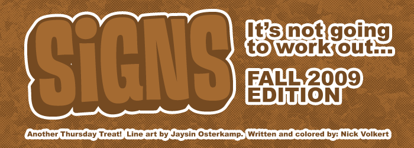
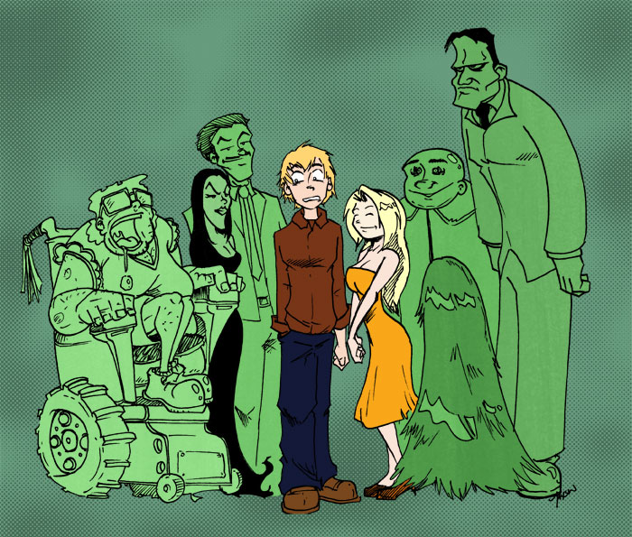
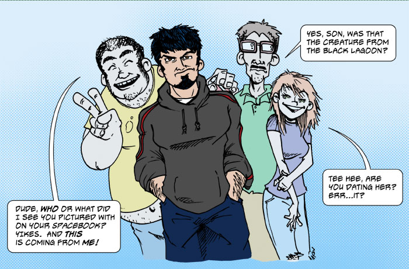
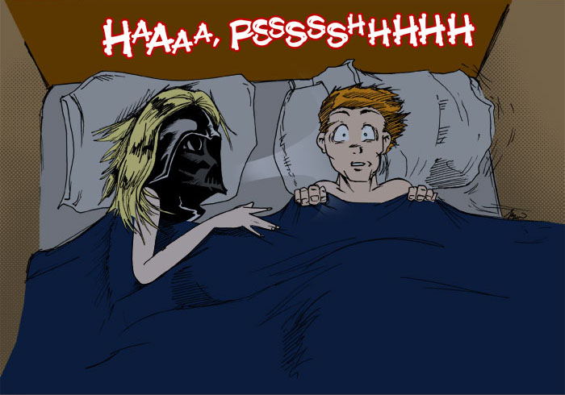
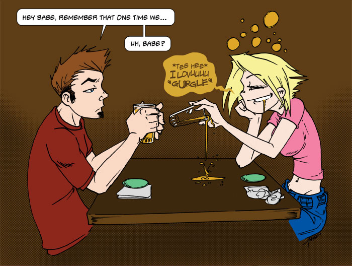
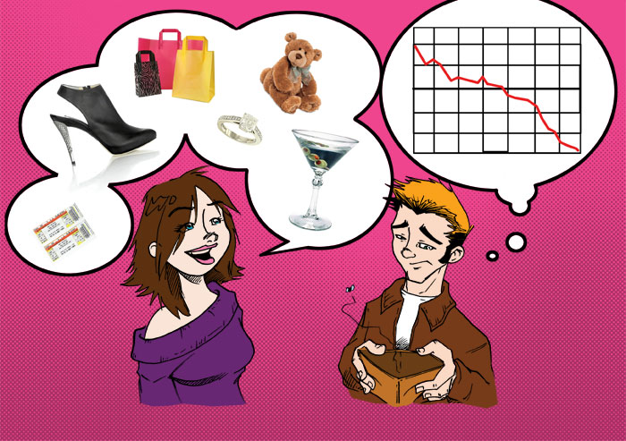

You meet her family, and shudder in fear thinking of the possible, miserable, future get-togethers with them if you continue dating...it's prob not going to work out.

You think to yourself, "hmm, do I want to be seen in a photo with her that will be posted on Facebook for all of my friends/coworkers/family/x-girlfriends/classmates to see?" If no, it's prob not going to work out.

You spend the night with her, and she snores, (you know, whatever, people snore), but her snore is EPIC, it sounds like she's on some kind of breathing apparatus, or is in an iron lung, kind of like Darth Vader...it's probably not going to work out.

When you reminisce about past dates/good times you've had together, she has a hard time remembering them because she was either too drunk or too stoned (or both), furthermore, she can barely function in public because she typically requires herself to be in an altered state...it's probably not going to work out.

You notice she gladly directs and dictates where and when you spend your money, (this hurts especially more if you're living paycheck to paycheck), Also she seldom (or never) pitches in on anything...it's probably not going to work out.